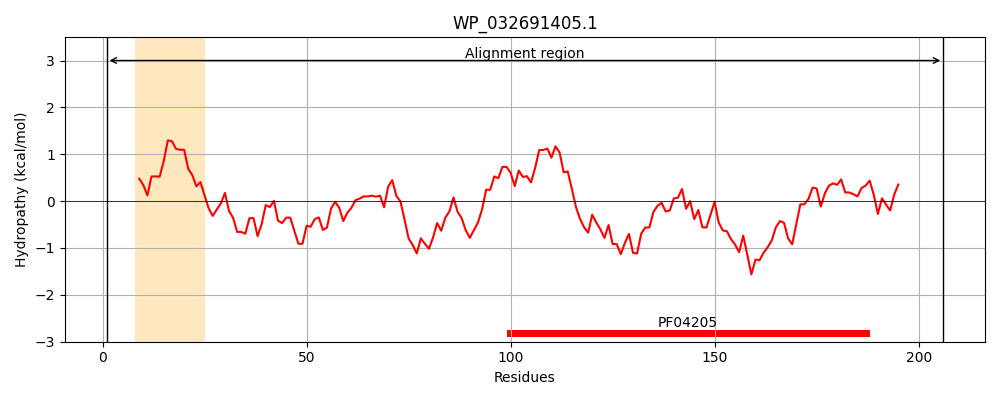
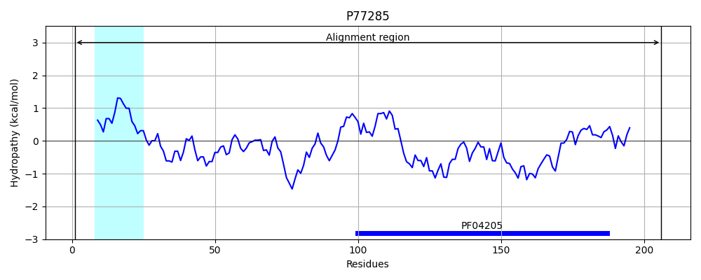
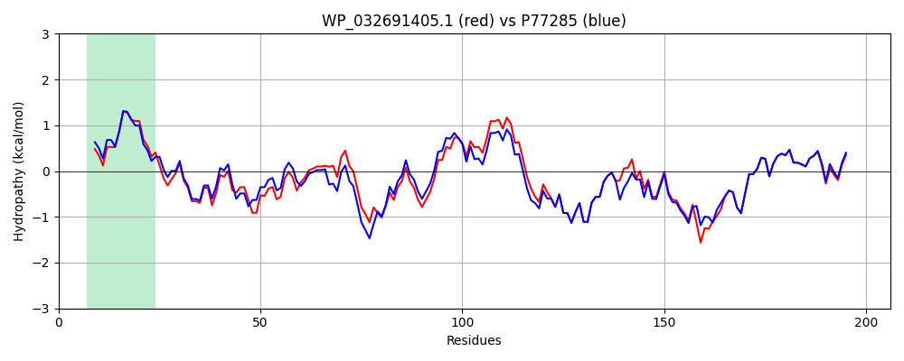

Hit Accession: P77285
Hit TCID: 3.D.6.1.4
Hit Description: gnl|BL_ORD_ID|11497 gnl|TC-DB|P77285|3.D.6.1.4 Electron transport complex subunit RsxG OS=Escherichia coli (strain K12) GN=rsxG PE=1 SV=1
Mach Len: 206
e:0.000000
Query TMS Count : 1
Hit TMS Count: 1
TMS-Overlap Score: 0.900000
Predicted Substrates:CHEBI:5584;hydron
BLAST Alignment:
Score: 912 , Bit scores: 355 bits, E-value: 6.4e-127, Alignment length: 206, Percentage identity: 83
Query: 1 MLKTMRKHGVTLALFAAGSTGLTAAINELTKSTIDQQAALQQKALFDQVLPADRYNNDLLKSCYLVSAPALGKGQHKVWIAKNNDQPIGAVMEATAPDGYSGAIQLLVAADFSGTVLGTRVTEHHETPGLGDKIELRLSDWITHFAGKVIHGQGDSHWAVKKDGGDFDQFTGATITPRAVVNAVKRAGLYAQTLPAQLPEFTACGE 206
MLKT+RKHG+TLALFAAGSTGLTAAIN++TK+TI +QA+LQQKALFDQVLPA+RYNN L +SCYLV+AP LGKG+H+V+IAK +D+P+ AV+EATAPDGYSGAIQLLV ADF+GTVLGTRVTEHHETPGLGDKIELRLSDWITHFAGK I G D+HWAVKKDGGDFDQFTGATITPRAVVNAVKRAGLYAQTLPAQL + ACGE
Sbjct: 1 MLKTIRKHGITLALFAAGSTGLTAAINQMTKTTIAEQASLQQKALFDQVLPAERYNNALAQSCYLVTAPELGKGEHRVYIAKQDDKPVAAVLEATAPDGYSGAIQLLVGADFNGTVLGTRVTEHHETPGLGDKIELRLSDWITHFAGKKISGADDAHWAVKKDGGDFDQFTGATITPRAVVNAVKRAGLYAQTLPAQLSQLPACGE 206 | Protein Hydropathy Plots: |
|---|
|  |  |
Pairwise Alignment-Hydropathy Plot:
|
|---|
|  |